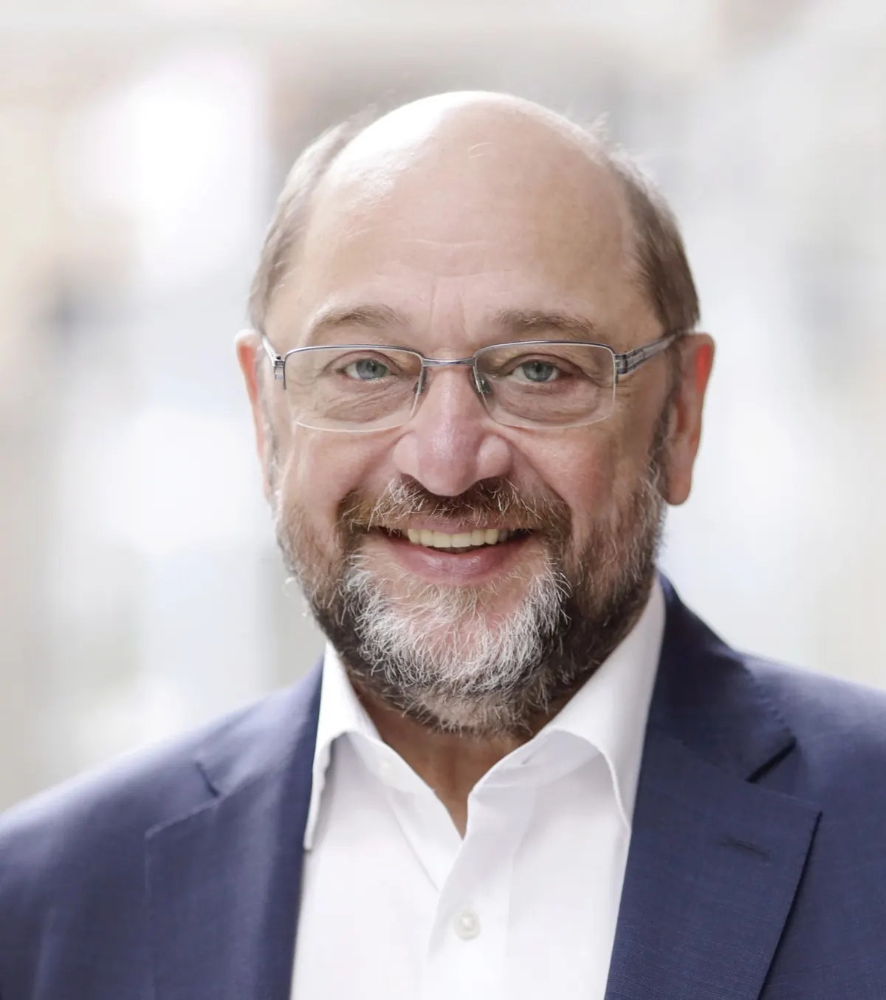

Nieuws ·
Erespeld Grenzland Europaër van het jaar 2024

Viering DAG VAN EUROPA in het Vrijheidsmuseum en uitreiking Erespeld Grenzland Europäer van het Jaar 2024 aan Martin Schulz
Op de avond dat Joost Klein met het lied “Europapa” Nederland vertegenwoordigt in de voorronde van het Eurovision Songfestival en zijn lied begint met “Europe, let’s come together…“, geven de sociaaldemocraten van de SPD en PvdA uit de grensregio Kleve, Kranenburg, Berg en Dal en Nijmegen daar voor het elfde jaar op rij gehoor aan.
Jaarlijks ontmoeten zij elkaar op 9 mei tijdens een strijdbare en vriendschappelijke bijeenkomst van internationaal georiënteerd Links en vieren zij samen de DAG VAN EUROPA. Een verenigd Europa dat al een mensenleven lang voor stabiliteit en vrede zorgt. Geen betere plaats om daar stil bij te staan dan in het Vrijheidsmuseum in Groesbeek.
Tijdens deze bijeenkomsten wordt ook altijd iemand geëerd die zich langjarig heeft ingezet voor het bevorderen van grensoverschrijdende samenwerking, -vriendschappen en internationaal bewustzijn en -handelen. De samenwerkende afdeling van de PvdA en SPD reiken dit jaar op donderdag 9 mei a.s. de Erespeld Grenzland Europäer van het Jaar 2024 uit aan de heer Martin Schulz. Hij is een prominent Duits politicus en voormalig partijleider van de sociaaldemocratische SPD. Zo was hij van 2012 tot 2017 voorzitter van het Europees Parlement, is hij voorzitter van de Friedrich Ebert Stichting en beschermheer van de Liberation Route Europe waar de Bevrijdingsroutes in onze regio deel van uit maken.
Martin Schulz is de negende Grenzland Europäer die deze prestigieuze onderscheiding ontvangt. De prijs wordt toegekend door het Overleg Sociaaldemocraten Grensregio Nijmegen-Kleve, die het een eer vinden dat de vertrekkende directeur van het Vrijheidsmuseum Wiel Lenders en zelf winnaar van de Erespeld in 2022, de lofrede voor Martin Schulz zal uitspreken.
Ook de Europarlement kandidaten Mohammed Chahim (GL-PvdA) en Jens Geier (SPD) zullen het woord voeren.
De ceremonie vindt plaats op donderdag 9 mei 2024, van 19.00 tot 21.00 uur in het Vrijheidsmuseum te Groesbeek. Inloop met koffie/thee vanaf 18.00 uur. Aanmelden is verplicht via welkom@vrijheidsmuseum.nl o.v.v. EUROPADAG 2024.
Datum en tijd: 9 mei 2024, van 19.00-21.00 uur
Plaats en adres: Vrijheidsmuseum, Wylerbaan 4, 6561 KR Groesbeek.
In de bedrijvengids: Vrijheidsmuseum